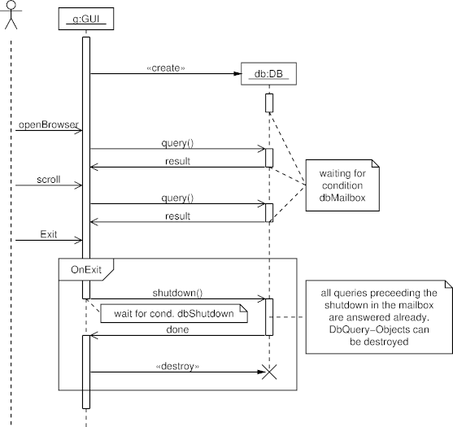

Sequence Diagram Example: A Comments and Frames
The following sequence diagram demonstrates the use of the frame and comment elements.
Diagram

Diagram Source Code
# usage-example for the comment extensions to the
# Written by Sebastian Setzer
.PS
copy "sequence.pic";
# Define the objects
actor(U, "");
object(G,"g:GUI");
placeholder_object(Dummy1); # more space
placeholder_object(D);
step();
# Message sequences
active(G);
step();
create_message(G,D,"db:DB");
active(D);
step();
inactive(D);
async(); # use asynchrone messages (not-filled arrowheads)
comment(D,C,down 1 right, wid 1 ht 0.7 "waiting for" "condition" "dbMailbox")
message(U,G,"openBrowser");
message(G,D,"query()"); active(D);
message(D,G,"result"); inactive(D);
connect_to_comment(D,C)
message(U,G,"scroll");
message(G,D,"query()"); active(D);
message(D,G,"result"); inactive(D);
connect_to_comment(D,C)
message(U,G,"Exit");
step();
begin_frame(G,F,"OnExit");
message(G,D,"shutdown()"); inactive(G); active(D);
comment(G,C,down .2 right .2, wid 2 ht 0.25 "wait for cond. dbShutdown")
step();
comment(D,C,right, wid 2 ht 1 \
"all queries preceeding the" \
"shutdown in the mailbox" \
"are answered already." \
"DbQuery-Objects can" \
"be destroyed")
message(D,G,"done"); inactive(D); active(G);
sync();
destroy_message(G,D,"");
step();
end_frame(D,F);
step();
inactive(G);
# Complete the lifelines
step();
complete(G);
complete(U);
.PE
 Last change: Tuesday, October 28, 2014 4:26 pm
Last change: Tuesday, October 28, 2014 4:26 pm